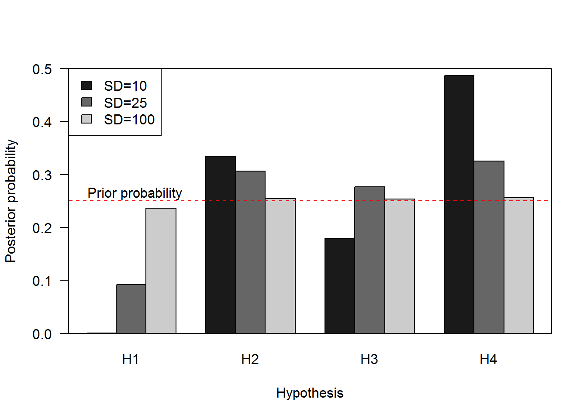
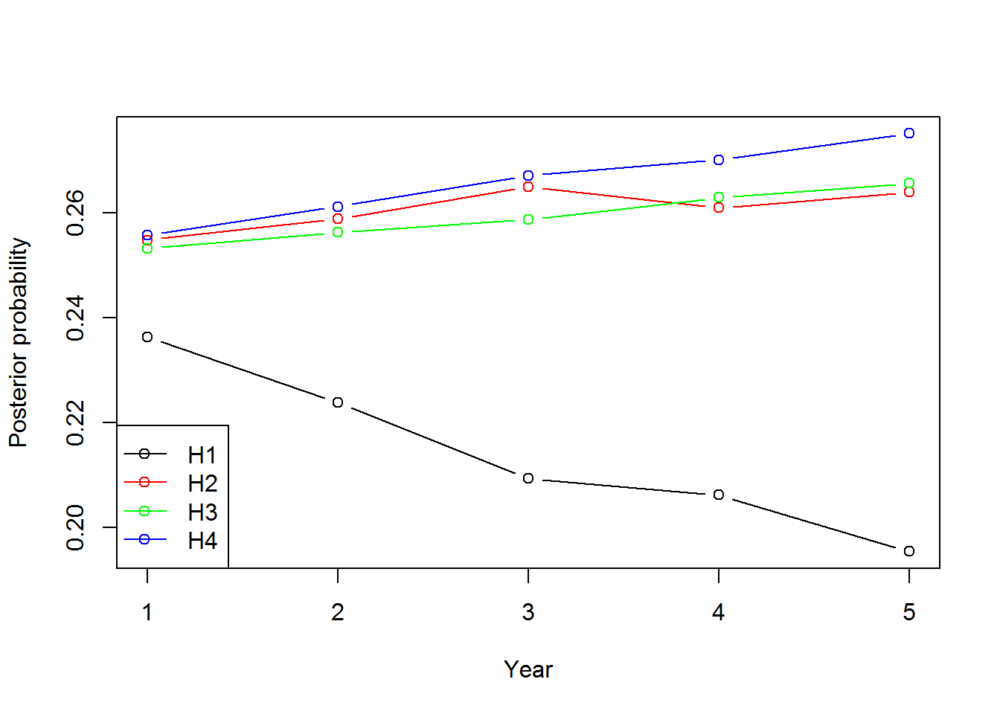

Class 22: Monitoring, Information, and ARM Continued
1 Class preliminaries
- Supplemental background reading for next class(es):
- Reading(s) for next time:
- Conroy and Peterson Chapter 7
- Conroy and Peterson Chapter 9
- Class project:
- Be developing your decision model
- Final exam period-April 28th at 3pm.
- Link to class recording YouTube
- Today’s R script Class-22.R
1.1 Class overview & objectives
The objectives of this class are to:
- Further understanding of Bayes Theorem
- Formally use monitoring to learn
- Adapting decisions to learning in adaptive management
2 Conditional probability
The core of Bayesian inference and Bayes approaches to updating information is Bayes’ Theorem. To understand Bayes’ Theorem (BT) we first have to understand what a conditional probability is. A conditional probability (or distribution) is simply the probability of an event \(y\) given that some other event \(x\) occurs.
As a simple example, \(y\) could be the event of drawing a spade from a deck and \(x\) is the event of drawing a heart. Either of these events can occur by themselves with probability \(p(y=Spade)\), \(p(x=Heart)\) respectively with \(p=1/4\) each in this case.
deck<- expand.grid(
suit = c("Diamond", "Club", "Heart", "Spade"),
card = c("Ace", "Deuce", "Three", "Four","Five",
"Six", "Seven", "Eight", "Nine", "Ten",
"Jack", "Queen", "King"))
deck$id<-1:nrow(deck) # for sampling later
ncards<-nrow(deck)
prX<- nrow(deck[deck$suit=="Heart",])/ncards #p(x=Heart)
prY<- nrow(deck[deck$suit=="Spade",])/ncards #p(x=Spade) Let’s confirm that the probability of drawing a Heart is in fact 0.25 and drawing a Spade is 0.25.
prX## [1] 0.25prY## [1] 0.25Good, these numbers jive.
Now what if we were curious what the probability of the drawing a Heart or a Spade? This is a joint probability and it specifies the probability of outcome \(y\) or \(x\) occurring. The rule for joint probabilities specifies that the probability of the events \(y\) and \(x\) jointly occurring is:
\[P(y \cap x) = p(y | x) p(x)\]
where \(p(y | x)\) is the conditional probability of outcome \(y\) given outcome \(x\). For example, \(p(y | x)\) might be the probability of drawing a Spade if a Heart has already been drawn (and not replaced in the deck, in this case, \(P(y | x) = 13/51\). Thus, the joint probability of drawing a spade given a heart was drawn is
\[P(y \bigcap x) = p(y | x) p(x) = 0.064 = \frac{13}{51}\cdot \frac{1}{4}.\]
Let’s confirm this by simulation.
reps<-50000
indx<-sample(nrow(deck),reps,replace=TRUE) # index for card selected
out<-data.frame(firstCardSuit=deck[indx,]$suit)
prop.table(table(out)) # all close to 0.25## out
## Diamond Club Heart Spade
## 0.25188 0.25120 0.24826 0.24866Now we need to simulate the second part of the process where we select a card given one card has been removed.
out$secondCardSuite<-NA
# SIMULATE THE PROCESS
for(i in 1:reps)
{
# SAMPLE ANOTHER CARD AND GET THE SUITE
id<- sample(deck$id[-indx[i]],1)
out$secondCardSuit[i]<- as.character(deck$suit[id])
}out$tmp<-1
outcomes<-aggregate(tmp~firstCardSuit+secondCardSuit,out,FUN=sum)
outcomes$p<- outcomes$tmp/repsLet’s check and see if the probabilities for the first suit being a heart and the second being a Spade is close to 0.064.
outcomes## firstCardSuit secondCardSuit tmp p
## 1 Diamond Club 3206 0.06412
## 2 Club Club 3007 0.06014
## 3 Heart Club 3132 0.06264
## 4 Spade Club 3094 0.06188
## 5 Diamond Diamond 2997 0.05994
## 6 Club Diamond 3157 0.06314
## 7 Heart Diamond 3189 0.06378
## 8 Spade Diamond 3122 0.06244
## 9 Diamond Heart 3184 0.06368
## 10 Club Heart 3268 0.06536
## 11 Heart Heart 2876 0.05752
## 12 Spade Heart 3230 0.06460
## 13 Diamond Spade 3207 0.06414
## 14 Club Spade 3128 0.06256
## 15 Heart Spade 3216 0.06432
## 16 Spade Spade 2987 0.05974Yes, they are pretty close, if you run for a large numbers of replicates they will converge to 0.064. The key to Bayes rule is that the conditioning can go either way, so
\[P(y \cap x) = p(y | x) p(x) = p(x | y) p(y)\]
Let’s confirm with simulation again. Here are the outcomes formally
\[P(y \cap x) = p(y=Spade | x =Heart) p(x = Heart) \] and
\[P(y \cap x) = p(x = Heart | y=Spade) p(y=Spade)\]
nrow(out[out$firstCardSuit=="Heart" & out$secondCardSuit=="Spade",])/reps## [1] 0.06432nrow(out[out$firstCardSuit=="Spade" & out$secondCardSuit=="Heart",])/reps## [1] 0.0646The simulation shows this is true, within rounding error. is also true. BT follows by equating 2 expressions above
\[p(y | x ) p(x) = p(x | y) p(y)\]
Ok, so why are probabilities important? Good question, they are important because it is how we quantify our belief in something and the uncertainty in that belief. If we know something absolutely there is no uncertainty and the probability is 1. If we acknowledge our incomplete understanding, we need to put some value on our beliefs of how a system works and we have to have 2 or more explanations that are framed as hypotheses which in turn provide predictions that can be compared to monitoring.
BT forms a general relationship between conditional and unconditional probabilities, and has many useful applications. One very useful role for BT is in helping us to update knowledge (e.g., about a parameter value) from information (like sample data). So if we let \(\theta\) stand for the value of a parameter for example and x stand for sample data, we can re-write BT as
\[p(\theta | x ) p(x) = p(x | \theta) p(\theta)\]
Viewed this way we have the following components:
- \(p(\theta)\) expresses knowledge (uncertainty) about the parameter in the absence of (before collecting) data, and is also known as the prior
- \(p(\theta | x )\) expresses knowledge (uncertainty) about the parameter in the presence (after collecting) data, and is also known as the posterior.
- \(p(x | \theta)\) expresses the probability or likelihood of having obtained the data result, given a particular value of the parameter, and
- \(p(x)\) is the probability of the data (i.e., outcomes)
Let’s put some sideboards on this flute music and see some application make some sense of it.
2.1 Application of Bayesian Updating to Model Weights
Above our focus has been on using data to update information about uncertainty in a parameter’s value. Another important application of BT is in updating our knowledge about which hypothesis or model is “true”, when, as often is the case, our predictions and management decisions have to be based on more than 1 model. Now let \(h_i\) stand for the event “Hypothesis i is true”, while x still stands for the sample data, we can re-write BT as
\[p(H_i | x)\cdot p(x) = p(x | H_i)\cdot p(H_i)\]
The above quantities now have the following interpretations:
- \(p(H_i)\) expresses knowledge (uncertainty) about the truth of hypothesis i in the absence of (before collecting) data, and is also known as the prior probability that i H is true.
- \(p(x)\) expresses the probability of the data,
- \(p(H_i | x)\) expresses knowledge (uncertainty) about the truth of hypothesis i in the presence (after collecting) data, and is also known as the posterior probability that i H is true.
- \(p(x|H_i)\) expresses the probability or likelihood of having obtained the data result, given that hypothesis i H is true.
If we rearrange the equation above we get:
\[p(H_i | x) = \frac{p(x | H_i)\cdot p(H_i)}{p(x)}\]
2.2 Prediction under 4 alternative models, Normal likelihood with equal and known variances
To keep things simple for illustration, we will take a case in which it is quite easy to produce likelihood values under each model. Take a case where we are harvesting a population and predicting its response under 4 alternative models of harvest impact. Given an initial population size of 125, the models produce predictions for next year’s population of 100, 150, 125, and 135. We will start with equal belief in the 4 alternative models (1/4 each). We will assume a Normal likelihood and a fixed standard deviation of 10. Finally, next year comes and we observe that the population is 140.
First, we calculate the likelihood values under each models as
\[p(x|H_i) = Normal(140,\mu_i, 100)\]
where
- \(p(x|H_i)\) is the probability of observing 140 given hypothesis \(i\),
- \(\mu_i\) is the predicted value under each model, and
- \(i\) indexes each hypothesis.
The dnorm() function returns this probability, for instance producing the likelihood for the third model.
dnorm(140,125,10) #p(x|H_i), 3rd model## [1] 0.01295176We can by replace 125 with the vector of predictions to get the likelihoods for all 4 models.
dnorm(140,c(100,150,125,130),100)## [1] 0.003682701 0.003969525 0.003944793 0.003969525Finally we use BT to put the model priors and likelihoods together:
priors<-rep(.25,4)# prior weights
observed<-140
predicted<-c(100,150,125,135)
sd<-10
like<-dnorm(observed,predicted,sd) # p(x|Hi)
post<-like*priors/sum(like*priors) # P(Hi): priors, p(x): sum(like*post)
summ<-cbind(priors,predicted, like,post)
models<-data.frame(priors=priors, pred=predicted,like=like,post=post)Let’s look at the summary table
models## priors pred like post
## 1 0.25 100 1.338302e-05 0.0001849282
## 2 0.25 150 2.419707e-02 0.3343580373
## 3 0.25 125 1.295176e-02 0.1789689607
## 4 0.25 135 3.520653e-02 0.4864880737In this example, the posterior evidence quickly begins to favor model 4 over the other models; model 1 has practically no weight.
Let’s see what happens when SD is 100 and 25. First let’s assign the standard deviation in the summary table.
models$sd<- 10Now we set the standard deviation to something larger, 25, and repeat the process and calculate the posterior probabilities for each model.
sd<-25
like<-dnorm(observed,predicted,sd)
post<-like*priors/sum(like*priors)
summ<-cbind(priors,predicted, like,post)
app<-data.frame(priors=priors, pred=predicted,like=like,post=post,sd=sd)
models<-rbind(models,app)Let’s try the same process with even more uncertainty, a standard deviation of 100.
sd<-100
like<-dnorm(observed,predicted,sd)
post<-like*priors/sum(like*priors)
summ<-cbind(priors,predicted, like,post)
app<-data.frame(priors=priors, pred=predicted,like=like,post=post,sd=sd)
models<-rbind(models,app)Let’s take a look at the summary.
models## priors pred like post sd
## 1 0.25 100 1.338302e-05 0.0001849282 10
## 2 0.25 150 2.419707e-02 0.3343580373 10
## 3 0.25 125 1.295176e-02 0.1789689607 10
## 4 0.25 135 3.520653e-02 0.4864880737 10
## 5 0.25 100 4.436833e-03 0.0921684094 25
## 6 0.25 150 1.473081e-02 0.3060098957 25
## 7 0.25 125 1.332898e-02 0.2768892040 25
## 8 0.25 135 1.564171e-02 0.3249324909 25
## 9 0.25 100 3.682701e-03 0.2363515076 100
## 10 0.25 150 3.969525e-03 0.2547595441 100
## 11 0.25 125 3.944793e-03 0.2531722624 100
## 12 0.25 135 3.984439e-03 0.2557166859 100With a bit of modification we can visualize the difference in ‘learning’ associated with certainty in the prediction. A barplot will work well here. But to do a barplot, we need a matrix of values to plot.
weights<- matrix(models$post,
ncol=4,nrow=3,
dimnames=list(c("10","25","100"),c("H1","H2","H3","H4")),
byrow=TRUE)Now let’s plot the posterior probabilities using a barplot.
barplot(weights,beside=TRUE,ylim=c(0,0.5),
las=1,
xlab="Hypothesis",
ylab="Posterior probability",
col=c("grey10","grey40","grey80"))
legend("topleft",
legend=c("SD=10","SD=25","SD=100"),
fill=c("grey10","grey40","grey80"))
abline(h=0.25, col="red",lty=2)
text(x=0.75,y=0.265,
labels="Prior probability",
pos=4)
box()
The rate of learning is very low when standard deviation is high! The posterior probabilities for each hypothesis have not deviated to far from the prior highlighted in the red dotted line when the standard deviation is high.
2.2.1 Iterating over time to learn
The process can repeat: if new data from a second survey year become available, we can again form likelihoods under the 4 models. But this time, the prior we should use is our current knowledge—which we just updated. So we would start with 0.25,0.25,0.25, and 0.25 as our priors and then apply BT with the new data.
Let’s maintain the above predictions and sd=100. Suppose in each of the next 5 years we have observe the following
- Year 1 = 140
- Year 2 = 139
- Year 3 = 143
- Year 4 = 125
- Year 5 = 138
Let’s get started with the updating
models<-data.frame()
observed<- 140
sd<-100
like<-dnorm(observed,predicted,sd)
priors<-rep(.25,4)# prior weights
post<-like*priors/sum(like*priors)
summ<-cbind(priors,predicted, like,post)
app<-data.frame(hypothesis=c(1:4),priors=priors,
pred=predicted,like=like,post=post,year=1)
models<-rbind(models,app)Now let’s see the posteriors.
models## hypothesis priors pred like post year
## 1 1 0.25 100 0.003682701 0.2363515 1
## 2 2 0.25 150 0.003969525 0.2547595 1
## 3 3 0.25 125 0.003944793 0.2531723 1
## 4 4 0.25 135 0.003984439 0.2557167 1And continue on with year 2 but using the posterior probabilities as the prior probabilities.
observed<- 139
sd<-100
like<-dnorm(observed,predicted,sd)
priors<-post # make posterior for year 1 as priors for year 2
post<-like*priors/sum(like*priors)
summ<-cbind(priors,predicted, like,post)
app<-data.frame(hypothesis=c(1:4),priors=priors,
pred=predicted,like=like,post=post,year=2)
models<-rbind(models,app)And continue on with year 3 but using the posterior probabilities as the prior probabilities.
observed<- 143
sd<-100
like<-dnorm(observed,predicted,sd)
priors<-post # make posterior for year 2 as priors for year 3
post<-like*priors/sum(like*priors)
summ<-cbind(priors,predicted, like,post)
app<-data.frame(hypothesis=c(1:4),priors=priors,
pred=predicted,like=like,post=post,year=3)
models<-rbind(models,app)And continue on with year 4 but using the posterior probabilities as the prior probabilities.
observed<- 125
sd<-100
like<-dnorm(observed,predicted,sd)
priors<-post # make posterior for year 3 as priors for year 4
post<-like*priors/sum(like*priors)
summ<-cbind(priors,predicted, like,post)
app<-data.frame(hypothesis=c(1:4),priors=priors,
pred=predicted,like=like,post=post,year=4)
models<-rbind(models,app)And finally let’s finish up with year 5 but using the posterior probabilities as the prior probabilities.
observed<- 138
sd<-100
like<-dnorm(observed,predicted,sd)
priors<-post # make posterior for year 4 as priors for year 5
post<-like*priors/sum(like*priors)
summ<-cbind(priors,predicted, like,post)
app<-data.frame(hypothesis=c(1:4),priors=priors,
pred=predicted,like=like,post=post,year=5)
models<-rbind(models,app)Let’s look at the mess we’ve put together.
models## hypothesis priors pred like post year
## 1 1 0.2500000 100 0.003682701 0.2363515 1
## 2 2 0.2500000 150 0.003969525 0.2547595 1
## 3 3 0.2500000 125 0.003944793 0.2531723 1
## 4 4 0.2500000 135 0.003984439 0.2557167 1
## 5 1 0.2363515 100 0.003697277 0.2238605 2
## 6 2 0.2547595 150 0.003965360 0.2587916 2
## 7 3 0.2531723 125 0.003950517 0.2562166 2
## 8 4 0.2557167 135 0.003986233 0.2611313 2
## 9 1 0.2238605 100 0.003637136 0.2094014 3
## 10 2 0.2587916 150 0.003979661 0.2648737 3
## 11 3 0.2562166 125 0.003925315 0.2586570 3
## 12 4 0.2611313 135 0.003976677 0.2670679 3
## 13 1 0.2094014 100 0.003866681 0.2062430 4
## 14 2 0.2648737 150 0.003866681 0.2608786 4
## 15 3 0.2586570 125 0.003989423 0.2628425 4
## 16 4 0.2670679 135 0.003969525 0.2700359 4
## 17 1 0.2062430 100 0.003711539 0.1955078 5
## 18 2 0.2608786 150 0.003960802 0.2639079 5
## 19 3 0.2628425 125 0.003955854 0.2655625 5
## 20 4 0.2700359 135 0.003987628 0.2750218 5It is nice to visualize the posterior probabilities to see what might be going on.
plot(post~year,
data=models,
xlab="Year",
ylab="Posterior probability",
type='n')
points(post~year,
data=models,
subset=hypothesis==1,
type='b',
col="black")
points(post~year,
data=models,
subset=hypothesis==2,
type='b',
col="red")
points(post~year,
data=models,
subset=hypothesis==3,
type='b',
col="green")
points(post~year,
data=models,
subset=hypothesis==4,
type='b',
col="blue")
legend("bottomleft",
legend=c("H1","H2","H3","H4"),
lty=1,
pch=1,
col=c("black","red","green","blue"))
Well, we are learning something… One of those hypotheses is not so good! Just imagine if you were using that hypothesis as your mental model and use it to make decisions, that could lead to problems.
3 Adaptive resource management
3.1 Calculating posterior probabilities (model weights) using monitoring data
Let’s revisit the robust redhorse example from the previous class and build on using r to update model weights given monitoring results. the robust redhorse (Moxostoma robustum) that was believed extinct but was rediscovered in the Oconee River Georgia USA in 1991 by fishery biologists with the Georgia Department of Natural Resources (cite). Initially, there was scientific disagreement about the factors responsible for depressing robust redhorse populations. Some scientists believed that flathead catfish (Pylodictis olivaris), large non-native piscivore, were depressing redhorse populations through predation. Other scientists believed that redhorse were rare because upstream hydropower generation increased streamflow variability, negatively affecting the population. It follows then that the optimal decision for increasing redhorse populations differed based on what mechanism was responsible for the relative rarity of redhorse. If predation was responsible, then the best management alternative might be to control the nonnative catfish populations, whereas the best alternative would be to decrease power generation if the mechanism was flow variability. Here we have a large amount of uncertainty about the factors affecting redhorse populations and that uncertainty likely has a substantial effect on the optimal management decision. If decision-making was dynamic and sequential in time or space, this would be a good candidate for ARM.
Let’s assume that biologists developed two simple models for predicting redhorse abundance in response to two management actions:
- decrease power generation and
- control flathead catfish.
The first model assumes that flow variability primarily controls redhorse populations. The model predicts that there will be 30 redhorse if power generation is decreased and 15 redhorse if flathead catfish are controlled. The second model assumes that redhorse populations are primarily controlled by flathead catfish. The model predicts that there will be 25 redhorse if flathead catfish are controlled and 15 redhorse if power generation is decreased. Notice that the estimated number of redhorse is greatest when the correct decision is matched with the corresponding system dynamics. This means that if decision-makers knew that flow variability was the mechanism, they would always choose to decrease power generation (i.e., the optimal decision, 30 redhorse) or if they knew that predation by flatheads was the mechanism, they would always choose to control flatheads (i.e., the optimal decision, 25 redhorse). However, decision-makers were unsure and the decision could not wait. Therefore, this structural uncertainty was incorporated using two models each with equal weight (0.5/0.5). The optimal decision then is identified by calculating the uncertainty weighted outcomes. For example, the expected number of redhorse for decreasing power generation is the top half of this decision tree: 0.530 + 0.515 = 22.5 and the controlling catfish is 0.515 + 0.525 = 20. The optimal decision alternative then is to decrease power generation. After implementing this alternative, 21 redhorse are counted during annual monitoring. Notice that this value is closer to the outcome estimated using the predation model. This suggests that there is greater evidence that predation is controlling the redhorse population. We use this evidence to update the model weights.
Predictions from flow modification models given the 2 management alternatives.
est_flow_decreasePower <- 30
est_flow_controlFlatheads <- 15Predictions from the predation models given the 2 management alternatives.
est_predation_decreasePower <- 15
est_predation_controlFlatheads <- 253.2 Model weights and decision making
Initially we give model weights of 0.5 and 0.5 to the flow and the predation hypotheses. Recall these hypotheses are represented as models and therefore have associated predictions.
Flow <- 0.5 # PRIOR PROBABILITY FOR FLOW MODEL
Predation <- 0.5 # PRIOR PROBABILITY FOR PREDATION MODEL3.3 Expected values given model uncertainty
First thing we need to do is calculate the expected value given model uncertainty. We will use this value to figure out what the best management action will be. Let’s get the expected value if we decrease power generation.
decreasePowerGeneration<- Flow*est_flow_decreasePower +
Predation*est_predation_decreasePowerAnd now let’s calculate the expected value, in numbers of redhorse, if we control flathead catfish.
controlFlatheads <- Flow*est_flow_controlFlatheads +
Predation*est_predation_controlFlatheadsHere are the expected values.
decreasePowerGeneration## [1] 22.5controlFlatheads## [1] 20The optimal decision is to decrease power generation with an expected value of 22.5.
decision<-"Decrease Power Generation"Here is where the monitoring feedback comes into play. Specifically, the observed abundance after management action to control flathead catfish was 21 robust redhorse.
obs<- 21Now we need to calculate the probability of observing 21 robust redhorse given the model predictions. Because we have an abundance a Poisson distribution will be appropriate to figure out the likelihood of the prediction given the monitoring data. The dpois() function will provide the conditional likelihood.
## conditional Likelihoods for Decrease power generation action
flow_like<-dpois(obs,est_flow_decreasePower)
predation_like<-dpois(obs,est_predation_decreasePower)The conditional probabilities are
flow_like## [1] 0.01915879predation_like## [1] 0.0298645for flow and predation model respectively, given the decision was to decrease power generation.
3.3.1 Calculating posterior probabilities
Now that we have the likelihoods for the outcome given the hypotheses and the decision we can update the model weights using BT. In this case we simply multiply the prior by the posterior and then sum the product of the prior and posterior for all the possible outcomes. We have 2 outcomes here.
flow_post<-flow_like*Flow/(flow_like*Flow + predation_like*Predation)
predation_post<- predation_like*Predation/(flow_like*Flow + predation_like*Predation)
flow_wghts<-flow_post
predation_weights<- predation_postNow we can look at our new posteriors, recall they were 0.5 before.
flow_post## [1] 0.3908099predation_post## [1] 0.60919013.3.1.1 Year 2
The posterior probabilities become the priors for the next time step which in turn influence the expected values of the decision.
Flow <- flow_post
Predation <- predation_postAnd here is where we start to adapt our decisions to learning. We use the new prior probabilities, those that reflect learning, to calculate the expected values, which in turn allows us to make smarter decisions.
Here is the expected value of robust redhorse abundance if power generation is decreased.
decreasePowerGeneration<- Flow*est_flow_decreasePower +
Predation*est_predation_decreasePowerHere is the expected value of robust redhorse abundance if flathead catfish are controlled.
controlFlatheads <- Flow*est_flow_controlFlatheads +
Predation*est_predation_controlFlatheadsBelow are the expected values (i.e., model predictions weighted by the prior probability of each model). The highest value ends up being the ‘best decision’.
decreasePowerGeneration## [1] 20.86215controlFlatheads## [1] 21.0919The optimal decision is to control flathead catfish with an expected value of 21.0919012.
decision<-c(decision , "Control Flathead Catfish")So here we go again, after implementing the management action to control flathead catfish, 18 robust redhorse were observed.
obs<- 18Again here is the conditional probabilities for observing 18 robust redhorse given the predicted number of robust redhorse for the flathead control decision and flow variability and predation hypotheses.
flow_like<-dpois(obs,est_flow_controlFlatheads)
predation_like<-dpois(obs,est_predation_controlFlatheads)We use our friend BT to calculate the posterior probability of the outcome given model predictions.
flow_post<-flow_like*Flow/(flow_like*Flow + predation_like*Predation)
predation_post<- predation_like*Predation/(flow_like*Flow + predation_like*Predation)
flow_wghts<-c(flow_wghts,flow_post) # keep track of to look at later
predation_weights<- c(predation_weights,predation_post) # keep track of to look at laterAnd we can see the new model weights.
# New model weights
flow_post## [1] 0.589338predation_post## [1] 0.4106623.3.1.2 Year 3
And now we can continue to iterate this process over time to make good management decisions given what learning has happened.
- Set posterior probabilities as new prior probabilities
Flow <- flow_post
Predation <- predation_post- Calculate expected values and select management action
decreasePowerGeneration<- Flow*est_flow_decreasePower +
Predation*est_predation_decreasePower
controlFlatheads <- Flow*est_flow_controlFlatheads +
Predation*est_predation_controlFlatheads
decreasePowerGeneration## [1] 23.84007controlFlatheads## [1] 19.10662decision<- c(decision, "Decrease Power Generation")- Set the observed outcome given the management action and update prior probabilities.
obs<- 22
flow_like<-dpois(obs,est_flow_decreasePower)
predation_like<-dpois(obs,est_predation_decreasePower)
flow_post<-flow_like*Flow/(flow_like*Flow + predation_like*Predation)
predation_post<- predation_like*Predation/(flow_like*Flow + predation_like*Predation)- Keep track of weights over time to look at learning.
flow_wghts<-c(flow_wghts,flow_post)
predation_weights<- c(predation_weights,predation_post)3.3.1.3 Year 4
And now we can continue to iterate this process over time to make good management decisions given what learning has happened.
- Set posterior probabilities as new prior probabilities
Flow <- flow_post
Predation <- predation_post- Calculate expected values and select management action
decreasePowerGeneration<- Flow*est_flow_decreasePower +
Predation*est_predation_decreasePower
controlFlatheads <- Flow*est_flow_controlFlatheads +
Predation*est_predation_controlFlatheads
decreasePowerGeneration## [1] 24.72071controlFlatheads## [1] 18.51953decision<- c(decision, "Decrease Power Generation")- Set the observed outcome given the management action and update prior probabilities.
obs<- 17
## conditional Likelihoods for Decrease.power.generation action
flow_like<-dpois(obs,est_flow_decreasePower)
predation_like<-dpois(obs,est_predation_decreasePower)
flow_post<-flow_like*Flow/(flow_like*Flow + predation_like*Predation)
predation_post<- predation_like*Predation/(flow_like*Flow + predation_like*Predation)- Keep track of weights over time to look at learning.
flow_wghts<-c(flow_wghts,flow_post)
predation_weights<- c(predation_weights,predation_post)3.3.1.4 Year 5
And now we can continue to iterate this process over time to make good management decisions given what learning has happened.
- Set posterior probabilities as new prior probabilities
Flow <- flow_post
Predation <- predation_post- Calculate expected values and select management action
decreasePowerGeneration<- Flow*est_flow_decreasePower +
Predation*est_predation_decreasePower
controlFlatheads <- Flow*est_flow_controlFlatheads +
Predation*est_predation_controlFlatheads
decreasePowerGeneration## [1] 16.03127controlFlatheads## [1] 24.31249decision<- c(decision, "Control Flathead Catfish")- Set the observed outcome given the management action and update prior probabilities.
obs<- 15
## conditional Likelihoods
flow_like<-dpois(obs,est_flow_controlFlatheads)
predation_like<-dpois(obs,est_predation_controlFlatheads)
flow_post<-flow_like*Flow/(flow_like*Flow + predation_like*Predation)
predation_post<- predation_like*Predation/(flow_like*Flow + predation_like*Predation)- Keep track of weights over time to look at learning.
flow_wghts<-c(flow_wghts,flow_post)
predation_weights<- c(predation_weights,predation_post)3.3.1.5 Year 6
Now there nothing that says we need to do exactly what the expected values tell us. But as part of ARM we simply need to acknowledge the decision made and use the predictions from that model instead. So we continue as before.
- Set posterior probabilities as new prior probabilities
Flow <- flow_post
Predation <- predation_post- Calculate expected values and select management action
decreasePowerGeneration<- Flow*est_flow_decreasePower +
Predation*est_predation_decreasePower
controlFlatheads <- Flow*est_flow_controlFlatheads +
Predation*est_predation_controlFlatheads
decreasePowerGeneration## [1] 21.49944controlFlatheads## [1] 20.66704decision<- c(decision, "Control Flathead Catfish")- Set the observed outcome given the management action and update prior probabilities.
obs<- 13
flow_like<-dpois(obs,est_flow_controlFlatheads)
predation_like<-dpois(obs,est_predation_controlFlatheads)
flow_post<-flow_like*Flow/(flow_like*Flow + predation_like*Predation)
predation_post<- predation_like*Predation/(flow_like*Flow + predation_like*Predation)- Keep track of weights over time to look at learning.
flow_wghts<-c(flow_wghts,flow_post)
predation_weights<- c(predation_weights,predation_post)The decisions changed, or were adaptive over time to learning. And by doing a management action we can learning about the response of the system.
decision## [1] "Decrease Power Generation" "Control Flathead Catfish"
## [3] "Decrease Power Generation" "Decrease Power Generation"
## [5] "Control Flathead Catfish" "Control Flathead Catfish"flow_wghts## [1] 0.39080988 0.58933804 0.64804745 0.06875132 0.43329631 0.95651382predation_weights## [1] 0.60919012 0.41066196 0.35195255 0.93124868 0.56670369 0.04348618Let’s look at any learning that might have occurred.
plot(flow_wghts,
xlab="Year",
ylab="Probability",
ylim=c(0,1),
type='b',
col='blue',
las=1)
points(predation_weights,
type='b',
col='green')
legend("topleft",
legend=c("Flow variability","Predation"),
lty=1,
col=c("blue","green"),
lwd=2)
Lots of bouncing around in terms of evidence for the 2 hypotheses, might be time to reassess. Keep in mind that this process does not guarantee the perfect decision, there are things that happen that may result in less than ideal outcomes but this approach provides a way to identify when this happens and the flexibility to reassess and evaluate system understanding. But you will have a smart decision that is transparent and repeatable.
This process is viewed as what is called double loop learning, illustrated below. In double loop learning, the management objectives, decision alternatives, and models are reassessed and potentially revised to reflect changes in scientific knowledge and management objectives and alternatives. Learning in the outer loop occurs at a much slower rate and with slower frequency (e.g., every 10 years) compared to single loop learning. The updating we just did represents the single loop where management actions are implemented, monitoring is used to quantify outcomes, and BT is used to formalize learning by updating model weights which represent our beliefs in the hypotheses.

There is no general rule when to initiate the reassessment as it will vary from program to program and largely depends on the decision makers, stakeholders, and technical experts. For example, the US Fish and Wildlife Service conducts endangered species status assessments approximately every 5 years, so the reassessment of objectives, alternatives and models (i.e., the outer loop) may coincide with planned. However, decision-makers should try to minimize the frequency of the reassessments to allow for sufficient amount of time to accumulate information.